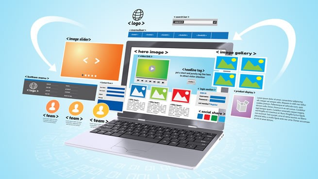

¿QUE ES UNA PAGINA WEB?

Se conoce como página Web, página electrónica o página digital a un documento digital de carácter multimediático (es decir, capaz de incluir audio, video, texto y sus combinaciones), adaptado a los estándares de la World Wide Web (WWW) y a la que se puede acceder a través de un navegador Web y una conexión activa a Internet. Se trata del formato básico de contenidos en la red.
En Internet existen más de mil millones de páginas Web de diversa índole y diverso contenido, provenientes del mundo entero y en los principales idiomas hablados. Esto representa el principal archivo de información de la humanidad que existe actualmente, almacenado a lo largo de miles de servidores a lo largo del planeta, a los que es posible acceder velozmente gracias a un sistema de protocolos de comunicación (HTTP).
Las páginas Web se encuentran programadas en un formato HTML o XHTML, y se caracterizan por su relación entre unas y otras a través de hipervínculos: enlaces hacia contenidos diversos que permiten una lectura compleja, simultánea y diversa, muy distinta a la que podemos hallar en los libros y revistas.
Da clic en la imagen para continuar
| Para que sirve? |
Tipos |
Diferencias |
|  |
|
|